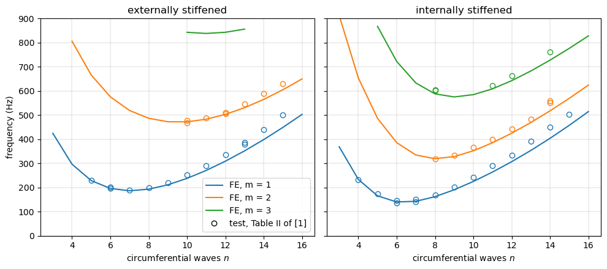
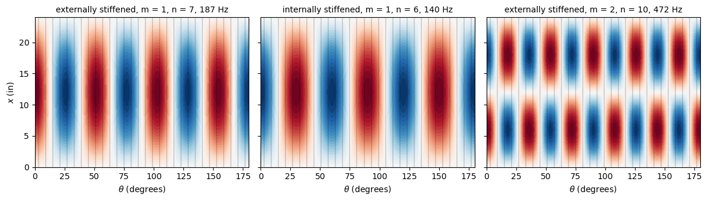
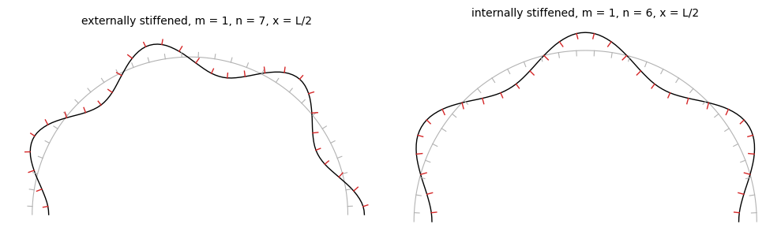

Natural frequencies of stringer-stiffened cylinders#
Sewall and Naumann [1] measured the natural frequencies of two aluminium cylinders with 60 integral rectangular stringers, one with the stringers outside the skin (externally stiffened) and one with the stringers inside (internally stiffened), with four sets of end conditions. Their analysis averaged (“smeared”) the stringers over the skin. Here both cylinders are modelled with discrete stringers, with the simply supported ends of the tests:
the skin with the BFSC cylinder element of Sanders-type kinematics,
BFSCCylinderSanders;each stringer with the BFSC plate element
BFSCPlate2Dof bfscplate2d, in the plane \((x, r)\) of the stringer.
The natural frequencies are computed with structsolve.freq and compared with the measured frequencies of Table II of [1].
The model is given by the module stiffened_cylinder.py, next to this notebook, see Tutorials. Besides bfsccylinder, it needs bfscplate2d 0.5.0 or newer, composites and structsolve.
The skin-stringer connection#
The plate of a stringer has the local coordinates \(X = x\) and \(Y = r - R\), from the middle surface of the skin, positive outwards, and its displacements \(U\), \(V\) and \(W\) are along \(x\), along the outward radius and along the circumference, the direction of \(v\) of the skin. The nodes of the stringer at \(Y = 0\) are at the nodes of the skin along the stringer, and their translations and their rotation about \(x\) are those of the skin, with the rotation \(\beta_y = -w_{,y} + v/R\) of the Sanders-type kinematics, see Donnell-type and Sanders-type kinematics:
together with their derivatives along \(x\), \(U_{,X} = u_{,x}\), \(V_{,X} = w_{,x}\), \(W_{,X} = v_{,x}\) and \(W_{,XY} = -w_{,xy} + v_{,x}/R\). These 8 of the 10 degrees of freedom of a node of the stringer, see The element and its degrees of freedom, are eliminated with the constraint basis \(\boldsymbol{u} = \boldsymbol{Z}\boldsymbol{u}_r\), and the matrices of the model are \(\boldsymbol{Z}^\top \boldsymbol{K}_{C0} \boldsymbol{Z}\) and \(\boldsymbol{Z}^\top \boldsymbol{M} \boldsymbol{Z}\). The derivatives \(U_{,Y}\) and \(V_{,Y}\) of the stringer, its in-plane shear and radial strains at the root, stay free. A stringer is a plate of thickness \(b_s\), the width of the stringer, and of height \(H_s = d_s + h/2\), from the middle surface of the skin to the tip of the stringer, \(d_s\) being the height of the stringer above the skin; the fillets at the root of the stringers are not modelled.
A rigid-body translation perpendicular to the axis and a rigid-body rotation about the axis of the stiffened cylinder satisfy these relations and give no forces, which the cells below verify on a coarse model of the whole cylinder:
[1]:
import time
import numpy as np
import matplotlib.pyplot as plt
from structsolve import freq
from bfsccylinder.version import __version__ as bfsccylinder_version
from bfscplate2d.version import __version__ as bfscplate2d_version
from stiffened_cylinder import (StiffenedCylinder, wave_numbers, DOF, V,
V_Y, W, W_Y)
print('bfsccylinder', bfsccylinder_version)
print('bfscplate2d', bfscplate2d_version)
bfsccylinder 0.6.1
bfscplate2d 0.4.1
[2]:
def rigid_body(model, kind):
# translation along the global y axis, or rotation about the axis
u = np.zeros(model.N)
th = model.theta
for i in range(model.nx):
c = DOF*model.skin_nodes[i]
if kind == 'translation':
u[c + V] = np.cos(th)
u[c + V_Y] = -np.sin(th)/model.R
u[c + W] = np.sin(th)
u[c + W_Y] = np.cos(th)/model.R
else:
u[c + V] = model.R
for s, ths in enumerate(model.theta_stringer):
for i in range(model.nx):
b = DOF*model.str_nodes[s, i]
if kind == 'translation':
u[b + V] = np.sin(ths) # radial
u[b + W] = np.cos(ths) # circumferential
else:
u[b + W] = model.R + model.Y
u[b + W_Y] = 1.
return u
coarse = StiffenedCylinder(R=9.537, L=24., h=0.0256, E=1e7, nu=0.315,
rho=2.54e-4, nstringers=60, bs=0.1,
Hs=0.2764 + 0.0256/2, side='external', nx=5,
half=False)
KC0 = coarse.KC0()
for kind in ['translation', 'rotation']:
u = rigid_body(coarse, kind)
ur = np.zeros(coarse.Nr)
ur[coarse.red[coarse.red >= 0]] = u[coarse.red >= 0]
tie_error = np.abs(coarse.Z @ ur - u).max()
force = np.abs(KC0 @ u).max()/abs(KC0).max()
print('%-11s: max|Z u_r - u| = %.1e, max|K u|/max|K| = %.1e'
% (kind, tie_error, force))
assert tie_error < 1e-12 and force < 1e-9
translation: max|Z u_r - u| = 1.4e-17, max|K u|/max|K| = 1.4e-11
rotation : max|Z u_r - u| = 0.0e+00, max|K u|/max|K| = 9.1e-16
The translation is not exactly reproduced by the cubic interpolation of the skin along the circumference, which gives the small residual forces.
Geometry, material and test frequencies#
The values are those of Table I of [1], averages of measurements, in inches, pounds-force and seconds. The stringers, 0.100 in wide, are spaced 1.00 in along the middle surface of the skin, 60 around the circumference. The cylinders are 24.00 in long between the simple supports.
[3]:
# Table I of Sewall and Naumann (1968)
geometry = {
'external': dict(R=9.537, h=0.0256, d_s=0.2764, A_s=0.029319),
'internal': dict(R=9.535, h=0.0266, d_s=0.2754, A_s=0.029219),
}
E = 1e7 # psi, skin and stringers
nu = 0.315
rho = 2.54e-4 # lbf s^2/in^4
L = 24.00 # in, simply supported
nstringers = 60
bs = 0.100 # in, stringer width
for side, g in geometry.items():
Hs = g['d_s'] + g['h']/2
print('%s: H_s = %.4f in, area of the plate b_s H_s = %.5f in^2, '
'A_s of Table I = %.6f in^2' % (side, Hs, bs*Hs, g['A_s']))
external: H_s = 0.2892 in, area of the plate b_s H_s = 0.02892 in^2, A_s of Table I = 0.029319 in^2
internal: H_s = 0.2887 in, area of the plate b_s H_s = 0.02887 in^2, A_s of Table I = 0.029219 in^2
The area of the plate of a stringer, which overlaps the half thickness of the skin, is 1.2 % smaller than the area \(A_s\) of Table I, which includes the fillets of radius 1/16 in.
The measured frequencies in Hz of Table II of [1], simply supported ends, for \(m\) axial half-waves and \(n\) circumferential waves; two values are the dual resonances of the same \((m, n)\), see [1]:
[4]:
test = {
'external': {
(1, 5): [231.], (1, 6): [197., 201.], (1, 7): [189.], (1, 8): [199.],
(1, 9): [219.], (1, 10): [252.], (1, 11): [290.], (1, 12): [336.],
(1, 13): [378., 386.], (1, 14): [440.], (1, 15): [500.],
(2, 10): [469., 478.], (2, 11): [489.], (2, 12): [507., 512.],
(2, 13): [546.], (2, 14): [590.], (2, 15): [630.],
},
'internal': {
(1, 4): [233.], (1, 5): [175.], (1, 6): [137., 147.],
(1, 7): [142., 150.], (1, 8): [169.], (1, 9): [203.], (1, 10): [243.],
(1, 11): [290.], (1, 12): [333.], (1, 13): [392.], (1, 14): [450.],
(1, 15): [502.],
(2, 8): [319.], (2, 9): [333.], (2, 10): [366.], (2, 11): [399.],
(2, 12): [443.], (2, 13): [482.], (2, 14): [551., 560.],
(3, 8): [602., 605.], (3, 11): [622.], (3, 12): [664.],
(3, 14): [761.],
},
}
Model and boundary conditions#
The tests supported the ends with sharp-edged rings inside and outside the skin, which restrain the normal displacement and let the cylinder move axially, with clips between the stringers against the rotation of the cylinder; the rings did not restrain the normal displacement of the skin between the stringers on the stiffened side [1]. The model has \(v = w = 0\) at both ends, \(u\) and \(w_{,x}\) free, and \(V = W = W_{,Y} = 0\) along the end edges of the stringers, the
derivatives of the constrained displacements along the edges being constrained as well, see StiffenedCylinder.constrained() in stiffened_cylinder.py. The mean of \(u\) along the edge \(x = 0\) is tied to zero, free_axial=True, which removes the rigid-body axial translation.
The half \(0 \le \theta \le \pi\) of the cylinder is modelled, with planes of symmetry midway between two stringers, \(v = v_{,x} = u_{,y} = w_{,y} = w_{,xy} = 0\). With 60 equally spaced stringers, the modes with \(n\) circumferential waves, \(n < 30\), come in pairs of the same frequency, in \(\cos n\theta\) and \(\sin n\theta\); the half model gives one mode of each pair, the one symmetric about \(\theta = 0\).
The mesh has nx nodes along \(x\), nbay skin elements between two stringers and nh stringer elements along the height. The numbers of half-waves \(m\) and of waves \(n\) of each mode are those of the largest coefficient of the expansion of \(w\) of the skin in \(\sin(m \pi x/L) \cos(n \theta)\), see wave_numbers().
[5]:
def frequencies(side, nx, nbay, nh, num_eigvalues=40):
g = geometry[side]
model = StiffenedCylinder(R=g['R'], L=L, h=g['h'], E=E, nu=nu, rho=rho,
nstringers=nstringers, bs=bs,
Hs=g['d_s'] + g['h']/2, side=side, nx=nx,
nbay=nbay, nh=nh, kinematics='sanders',
half=True, free_axial=True)
K = model.reduce(model.KC0())
M = model.reduce(model.M())
bu = ~model.constrained('SS')
lambda2, eigvecs = freq(K[bu, :][:, bu], M[bu, :][:, bu],
num_eigvalues=num_eigvalues, symmetric=True,
silent=True)
f = np.sqrt(-lambda2)/(2*np.pi)
modes = np.zeros((model.N, len(f)))
for i in range(len(f)):
ur = np.zeros(model.Nr)
ur[bu] = eigvecs[:, i]
modes[:, i] = model.Z @ ur
mn = [wave_numbers(model, modes[:, i]) for i in range(len(f))]
return model, f, mn, modes
def lowest_by_mn(f, mn):
# lowest frequency of each (m, n)
out = {}
for fi, key in zip(f, mn):
out.setdefault(key, fi)
return out
Mesh convergence#
The externally stiffened cylinder with three meshes, the lowest frequency of each \((m, n)\) with \(m = 1\):
[6]:
meshes = [(13, 2, 1), (17, 2, 2), (25, 4, 3)]
conv = {}
for nx, nbay, nh in meshes:
t0 = time.time()
conv[(nx, nbay, nh)] = frequencies('external', nx, nbay, nh)
print('nx=%d, nbay=%d, nh=%d: %d dofs, %.0f s'
% (nx, nbay, nh, conv[(nx, nbay, nh)][0].Nr, time.time() - t0))
print('\n n ' + ''.join(' %12s' % str(mesh) for mesh in meshes))
for n in range(4, 16):
row = []
for mesh in meshes:
_, f, mn, _ = conv[mesh]
row.append(lowest_by_mn(f, mn).get((1, n), np.nan))
print('%2d ' % n + ''.join(' %12.1f' % v for v in row))
nx=13, nbay=2, nh=1: 12609 dofs, 5 s
nx=17, nbay=2, nh=2: 21589 dofs, 10 s
nx=25, nbay=4, nh=3: 54249 dofs, 33 s
n (13, 2, 1) (17, 2, 2) (25, 4, 3)
4 297.3 296.9 296.5
5 229.8 229.3 228.8
6 197.4 196.7 196.2
7 187.9 187.2 186.6
8 194.4 193.8 193.2
9 212.5 211.9 211.4
10 239.0 238.4 238.0
11 271.9 271.4 271.0
12 310.0 309.6 309.2
13 352.7 352.3 351.9
14 399.4 399.0 398.7
15 449.8 449.5 449.2
The frequencies of the two finer meshes differ by less than 0.4 %, and those of the coarsest mesh by less than 0.7 % from the finest. The finest mesh is used below.
Comparison with the tests#
[7]:
results = {'external': conv[meshes[-1]]}
t0 = time.time()
results['internal'] = frequencies('internal', *meshes[-1], num_eigvalues=60)
print('internally stiffened cylinder: %.0f s' % (time.time() - t0))
for side in ['external', 'internal']:
model, f, mn, modes = results[side]
fe = lowest_by_mn(f, mn)
print('\n%sly stiffened cylinder, Table II of [1]' % side)
print(' m n test (Hz) FE (Hz) FE/test')
for (m, n), ftest in test[side].items():
tested = ' and '.join('%.0f' % v for v in ftest)
if (m, n) not in fe:
print('%2d %3d %-14s above the computed modes' % (m, n, tested))
continue
print('%2d %3d %-14s %7.1f %6.3f'
% (m, n, tested, fe[(m, n)], fe[(m, n)]/np.mean(ftest)))
internally stiffened cylinder: 39 s
externally stiffened cylinder, Table II of [1]
m n test (Hz) FE (Hz) FE/test
1 5 231 228.8 0.991
1 6 197 and 201 196.2 0.986
1 7 189 186.6 0.987
1 8 199 193.2 0.971
1 9 219 211.4 0.965
1 10 252 238.0 0.944
1 11 290 271.0 0.934
1 12 336 309.2 0.920
1 13 378 and 386 351.9 0.921
1 14 440 398.7 0.906
1 15 500 449.2 0.898
2 10 469 and 478 472.2 0.997
2 11 489 483.0 0.988
2 12 507 and 512 503.1 0.987
2 13 546 530.9 0.972
2 14 590 565.2 0.958
2 15 630 605.1 0.961
internally stiffened cylinder, Table II of [1]
m n test (Hz) FE (Hz) FE/test
1 4 233 233.5 1.002
1 5 175 165.6 0.946
1 6 137 and 147 140.2 0.988
1 7 142 and 150 142.9 0.979
1 8 169 162.2 0.960
1 9 203 190.7 0.940
1 10 243 225.2 0.927
1 11 290 264.2 0.911
1 12 333 307.2 0.922
1 13 392 353.8 0.903
1 14 450 404.0 0.898
1 15 502 457.6 0.912
2 8 319 319.4 1.001
2 9 333 328.3 0.986
2 10 366 352.3 0.962
2 11 399 385.6 0.966
2 12 443 425.2 0.960
2 13 482 469.5 0.974
2 14 551 and 560 517.8 0.932
3 8 602 and 605 588.0 0.974
3 11 622 609.0 0.979
3 12 664 642.7 0.968
3 14 761 727.8 0.956
[8]:
fig, axes = plt.subplots(1, 2, figsize=(10, 4.5), sharey=True)
colors = {1: 'C0', 2: 'C1', 3: 'C2'}
for ax, side in zip(axes, ['external', 'internal']):
model, f, mn, modes = results[side]
fe = lowest_by_mn(f, mn)
for m in [1, 2, 3]:
ns = sorted(n for (mm, n) in fe if mm == m and 3 <= n <= 16)
ax.plot(ns, [fe[(m, n)] for n in ns], '-', color=colors[m],
label='FE, m = %d' % m)
for (mm, n), ftest in test[side].items():
if mm == m:
ax.plot([n]*len(ftest), ftest, 'o', mfc='none',
color=colors[m])
ax.plot([], [], 'ko', mfc='none', label='test, Table II of [1]')
ax.set_title('%sly stiffened' % side)
ax.set_xlabel('circumferential waves $n$')
ax.set_ylim(0, 900)
ax.grid(True, lw=0.3)
axes[0].set_ylabel('frequency (Hz)')
axes[0].legend(loc='lower right')
plt.tight_layout()
plt.show()

Mode shapes#
The normal displacement \(w\) of the skin over the developed half cylinder for three modes, with the stringers as thin lines, and, for the lowest mode of each cylinder, the deformed cross-section at mid-length with the stringers, the displacements greatly magnified:
[9]:
def plot_w(ax, model, mode, title):
w = model.skin_field(mode, W)
xx, tt = np.meshgrid(model.xlin, np.degrees(model.theta), indexing='ij')
lim = np.abs(w).max()
ax.contourf(tt, xx, w, levels=np.linspace(-lim, lim, 41), cmap='RdBu_r')
for th in np.degrees(model.theta_stringer):
ax.axvline(th, color='k', lw=0.2)
ax.set_title(title, fontsize=10)
ax.set_xlabel(r'$\theta$ (degrees)')
fig, axes = plt.subplots(1, 3, figsize=(12, 3.5), sharey=True)
for ax, (side, m, n) in zip(axes, [('external', 1, 7), ('internal', 1, 6),
('external', 2, 10)]):
model, f, mn, modes = results[side]
i = mn.index((m, n))
plot_w(ax, model, modes[:, i],
'%sly stiffened, m = %d, n = %d, %.0f Hz' % (side, m, n, f[i]))
axes[0].set_ylabel('$x$ (in)')
plt.tight_layout()
plt.show()

[10]:
def plot_section(ax, model, mode, scale):
i = model.nx//2
R = model.R
th = model.theta
v = model.skin_field(mode, V)[i]
w = model.skin_field(mode, W)[i]
norm = scale/np.abs(w).max()
ax.plot(R*np.cos(th), R*np.sin(th), color='0.7', lw=0.8)
r = R + norm*w
t = th + norm*v/R
ax.plot(r*np.cos(t), r*np.sin(t), 'k', lw=1)
for s, ths in enumerate(model.theta_stringer):
nodes = model.str_nodes[s, i]
r0 = R + model.Y
ax.plot(r0*np.cos(ths), r0*np.sin(ths), color='0.7', lw=0.8)
r = r0 + norm*mode[DOF*nodes + V]
t = ths + norm*mode[DOF*nodes + W]/r0
ax.plot(r*np.cos(t), r*np.sin(t), 'C3', lw=1)
ax.set_aspect('equal')
ax.axis('off')
fig, axes = plt.subplots(1, 2, figsize=(10, 3.5))
for ax, (side, m, n) in zip(axes, [('external', 1, 7), ('internal', 1, 6)]):
model, f, mn, modes = results[side]
i = mn.index((m, n))
plot_section(ax, model, modes[:, i], scale=1.)
ax.set_title('%sly stiffened, m = %d, n = %d, x = L/2' % (side, m, n),
fontsize=10)
plt.tight_layout()
plt.show()

Discussion#
The lowest measured frequencies are 189 Hz (\(m = 1\), \(n = 7\)) for the externally stiffened cylinder and 137 and 147 Hz (\(m = 1\), \(n = 6\)) for the internally stiffened one, which [1] summarizes as minimum frequencies about 34 % higher with external stringers. The model gives its lowest frequencies at the same \((m, n)\), 186.6 Hz and 140.2 Hz, 33 % apart: the effect of the eccentricity of the stringers comes out of the connection of the plates of the stringers to the skin, without any eccentricity parameter. Near the minima, for \(n \le 7\) with \(m = 1\), the model is within 2.1 % of the tests, except the internally stiffened cylinder at \(n = 5\) (5 % lower), and within 1 % for the lowest \(m = 2\) modes.
The model is lower than the tests by a difference that grows with \(n\), to about 10 % at \(n = 14\) and 15 for \(m = 1\), for both cylinders, and by 4 to 7 % for \(m = 2\) and \(m = 3\) at the largest \(n\) tested. For large \(n\) the frequencies are governed by the bending of the skin around the circumference [1]. In the model the skin has the thickness \(h\) everywhere and each stringer is connected to it along a line, whereas the roots of the actual stringers, 0.100 in wide with fillets of radius 1/16 in, stiffen the skin locally over about a quarter of each 1.00 in bay. [1] accounted for it with a circumferential bending stiffness of the skin increased by 19.7 % and 19.5 % for the external and internal stringers (\(D_y/D\) = 1.197 and 1.195, its appendix A), which raised its calculated frequencies at \(n = 15\) by about 9 % for \(m = 1\) (its figure 7(a)). The model has neither this local stiffening nor the two welded longitudinal seams, where the skin is thicker (figure 1 of [1]), nor the support rings of the tests, which did not restrain the skin between the stringers on the stiffened side. It is not adjusted to the tests.
Reference#
[1] Sewall, J. L., and Naumann, E. C., An experimental and analytical vibration study of thin cylindrical shells with and without longitudinal stiffeners, NASA TN D-4705, 1968, NTRS 19680024266.